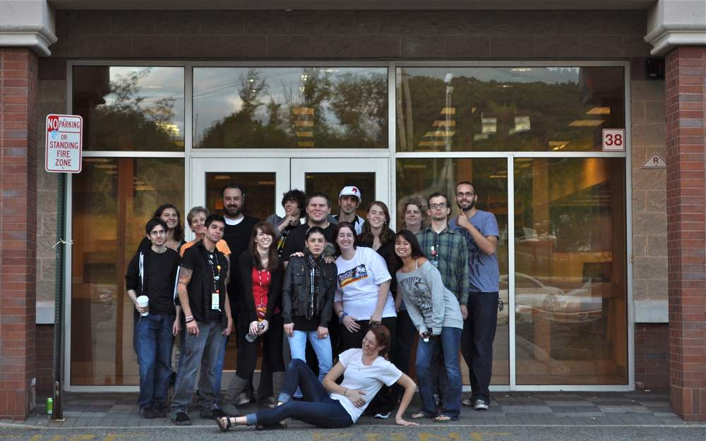

As is obvious from the content of Sold Everywhere But Borders, the employees and customers of Ramsey Borders gave it an identity. The book is a tribute to the company, yes, but more so to the people who made up the company. Of the 11,000+ individuals who were ever employed by Borders Group, I only had the pleasure of meeting a few of them, but I wouldn't trade these relationships for the world.